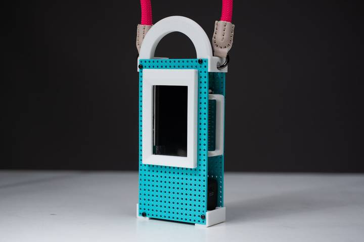

pegBits

Right now we’re working on this becoming a social enterprise - want to get involved? ileddigital@gmail.com
pegBits is a standardised and scalable open source pegboard based system for prototyping open hardware technologies from component to artefact. It works on the international standard for building with electronics based on though-hole Integrated Circuits (ICs). Through-hole ICs are based on a standard hole separation of 0.1” (2.54mm). PegBits are centred around the most commonly available existing standards in electronic and mechanical system design, namely on circuit boards (e.g stripboard), screws, spacers and inserts — all things that are low-priced, scalable and non-proprietary components that are commonly used within the open source electronics community. So pegBits seek to integrate physical computing into the physical world akin to how Meccano or Lego afford adaptation and construction through utilising standardisation and constraints.
https://hicraftnorthumbria.org/craft-investigations/pegbits/
collaborated with
publication
- Jon Rogers, Justin Marshall, Jayne Wallace, Tom Metcalfe, Nick Taylor, Romit Raj, Jayn Verkerk, and Philip Heslop. 2025. PegBits: Experimenting with a 0.1" system for open hardware prototyping. In Proceedings of the Nineteenth International Conference on Tangible, Embedded, and Embodied Interaction (TEI '25). Association for Computing Machinery, New York, NY, USA, Article 57, 1–7. https://doi.org/10.1145/3689050.3705978